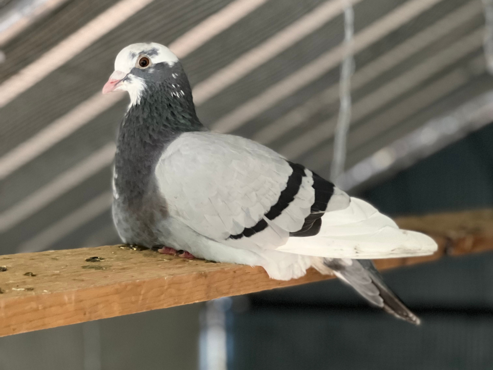
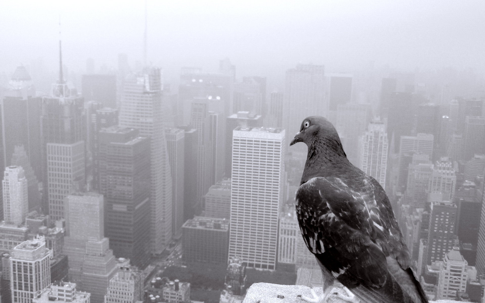

The common pigeon that you may see on your walk to work has a lot more ties to human culture and history than the stout-bodied birds may let on.
the feral pigeons that now clutter our cities, derived from a cliff-dwelling version of what we know today called Columba livia or rock dove. the human-pigeon relationship dates back to before recorded history, there's evidence of the rock doves living among extinct species of archaic humans. it wasn't until at least 1400 BCE that humans started breeding and domesticating rock doves. From that point forward they became an important part of human culture. for thousands of years the domestic pigeon was used for food, messaging, war, they were kept as pets, and they were experimented on. the bird was brought all across the globe for human usage, but as our technology evolved, our use for the birds diminished. Humans bred pigeons for their own personal use, but as they lost their usefulness the surplus of birds escaped or were released, eventually establishing feral populations.

